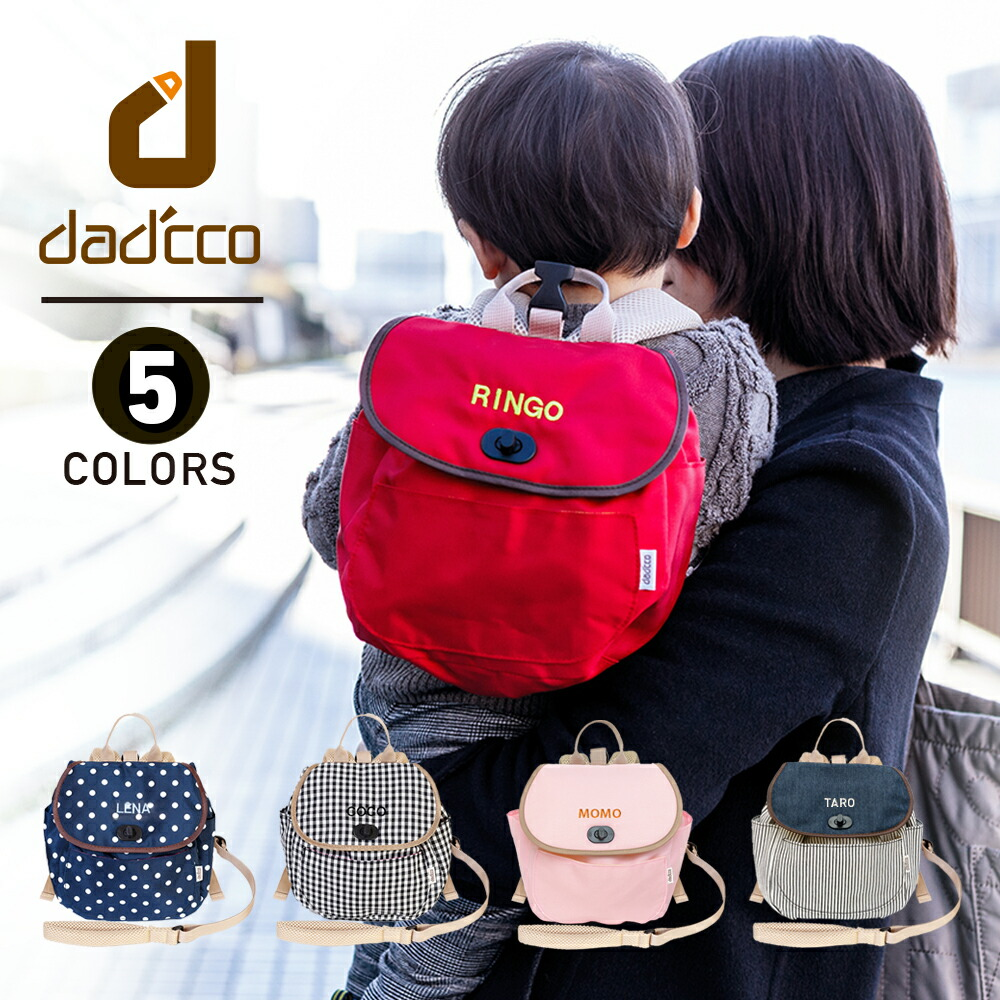
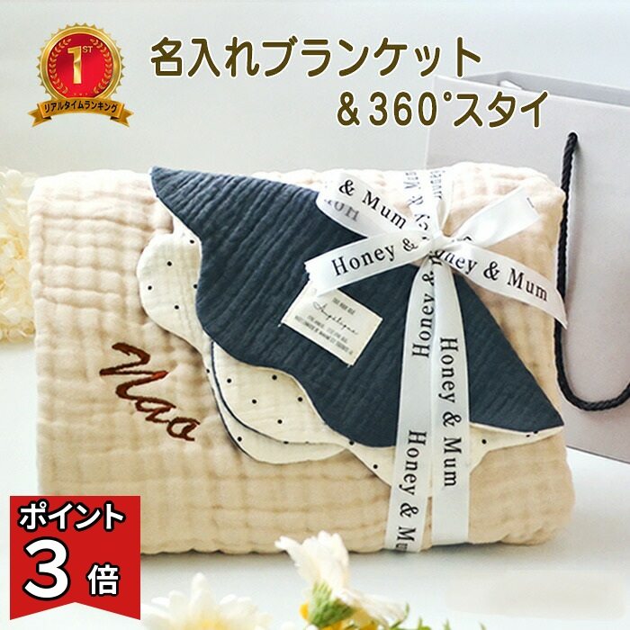

名入れは「あり」か「なし」かは、条件で決まる
名前入りのブランケット、スタイ、食器。名入れグッズは出産祝いの「特別感」の代表格で、贈る側からは鉄板の選択肢に見えます。ところが受け取り側の声を集めると、評価はきれいに真っ二つに分かれます。「もらった中で一番嬉しかった」と「一番処分に困った」が、同じ名入れというジャンルから出てくるのです。
分かれ目は、品目の良し悪しではありません。その名入れ品が被るかどうかと、使わなくなったときの「出口」があるかどうかで決まっています。名入れは「その子のためだけのもの」になる分、受け取る側の手放す選択肢を消してしまうからです。
この記事では、嬉しい側と困る側の境界線を整理し、名入れで失敗しにくい条件と、その条件に合う実例を紹介します。
嬉しい側の理由：「この子だけのもの」になる
名入れが強く喜ばれるのは、特に2人目以降です。2人目の赤ちゃん用品は大半が上の子のお下がりで、「この子のために用意されたもの」がほとんどありません。その環境で名前の入った品は、初めての「この子だけのもの」になります。
当サイトが集計したXの受け取り体験でも、名入れへの言及は肯定が中心でした。共通していたのは、「自分では買わない価格帯の実用品に、名前が入っている」という形です。記念品として飾るものより、毎日使うものに名前が入っているほうが、喜びが長続きしていました。
- お下がりとの差別化：2人目・3人目ほど、「この子のもの」が生まれる価値が上がります。
- 写真に残る：名前入りの品は成長記録の写真に写り込みやすく、記念としての役割も果たします。
- きょうだいの取り違え防止：タオルや食器など、兄弟で同じものを使う家庭では実用上の利点にもなります。
→ 2人目で名入れが評価された文脈はこちら：二人目の出産祝いは何が正解？ 本音調査で分かった「外さない」選び方
困る側の理由：出口がなくなる
一方で、名入れならではの困り方は、通常のギフトの困り方と質が違います。通常の品なら、使わなければ売る・譲るという出口があります。名入れ品には、その出口がありません。
- 売れない：他人の子の名前が入った品に、フリマサイトで買い手はつきません。
- 譲れない：名前入りでは、親戚や友人へのお下がりにも回せません。
- 捨てにくい：名前が入っていると、処分すること自体に抵抗が生まれます。使わないのに捨てられず、収納に残り続けます。
さらに、困り方は掛け算で悪化します。重複（上の子と同じ名入れ品が届く）、不要な品目（子によって要らないスタイなど）に名入れが重なると、「使わない＋手放せない」の二重苦になります。そして綴りのミスは決定的です。名入れ品は注文後の変更・キャンセルができないのが基本で、漢字やローマ字を間違えると、贈る側も受け取る側も気まずさだけが残ります。
つまり名入れの失敗は、「名入れをしたこと」ではなく、「被る・使わない・間違える」のいずれかと名入れが重なったときに起きます。逆に言えば、この3点を潰せば名入れは強いギフトになります。
運営者の実例：二人目の名入れで実際に困ったこと
当サイト運営者自身が二人目の出産祝いを受け取ったときの実例も、正直に書いておきます。
・二人目のとき、上の子と全く同じ名入れブランケットが届きました。贈ってくれた側は「おそろい」のつもりだったと思いますが、受け取る側の実態は単なる重複で、保管するブランケットが2枚になりました。名入れでなければ、どちらかを譲る選択肢もあったはずです。
・名前刺繍入りのスタイは、いちばん処分に困りました。うちの子はよだれがほとんど出ず、スタイ自体の出番がほぼありませんでした。名前が入っているので売ることも譲ることもできず、かといって名前入りのものを捨てるのも抵抗があり、宙ぶらりんのまま残りました。
どちらも「贈ってくれた気持ちは嬉しい」ことが前提です。そのうえで、名入れは被ったとき・使わなかったときに逃げ場がない——この一点が、贈る前に知っておいてほしい境界線でした。
ママの本音
※以下3件は、口コミ・編集部ヒアリング・ギフト利用シーンをもとに再構成したコメントです。個別の取材ではありません。
美咲さん：2人目で初めての「この子だけのもの」
「上の子のお下がりばかりの中で、名前入りのタオルだけは『この子のために用意されたもの』でした。写真を撮るときも、ついそれを選んでいました。」
（名入れが肯定される典型は、お下がり環境での「この子だけのもの」化でした）
沙織さん：名前入りは処分の行き場がない
「名前が入っていると、フリマにも出せないし、人にもあげられない。捨てるのも気が引けて、使わないまま引き出しの中にずっとあります。」
（「出口」の問題は、使わなかった品で最も重くなります）
奈央さん：綴りを確認してくれたことが嬉しかった
「注文前に友人が『名前の漢字とローマ字、これで合ってる？』と聞いてくれました。確認してくれたこと自体が丁寧で嬉しかったし、安心でした。」
（綴り確認は、ミス防止であると同時に「丁寧さ」の伝わる行為でもありました）
境界線チェック：贈る前に確認したい5条件
名入れで失敗しにくい条件は、次の5つに集約されます。注文ボタンを押す前に、一通り目を通してください。
- 1．名前の綴りを確認したか——漢字・読み方・ローマ字表記を、注文前に本人か家族に確認します。確認なしの名入れは賭けです。確認の一言は、失礼ではなく丁寧さとして受け取られます。
- 2．上の子の有無と、同じ名入れ品を持っていないか——2人目では重複チェックが最重要です。「おそろいにしたい」ときこそ、先に本人へ聞いてください。
- 3．実用品・消耗寄りか——毎日使うものは、出口の問題が小さくなります。飾るだけの記念品は、相手が「残したいタイプ」だと分かっているときに限ります。
- 4．名入れがさりげないか——裏側・持ち手・小さな刺繍は日常使いしやすく、好みも割りません。前面に大きな名前は、好みと、外で名前が読み取れることへの抵抗感の両面で分かれます。
- 5．使う時期が長いか——離乳食の食器や1歳以降に使うリュックなど、使用期間の長いものは「もらった直後だけ」の品より失敗が少なくなります。
条件に合う名入れギフト、3つの実例
上の条件に照らして、実例を3つ挙げます。価格はいずれも2026年11月20日に楽天市場の販売ページで確認したものです。
裏側の名入れでさりげない：飛鳥工房 ファーストスプーンセット
佐賀県の木工房による、木製スプーンと器のセットです。名入れはスプーンと器の裏側に入るため、日常使いでは目立たず、条件4（さりげなさ）を満たします。離乳食期に使い、卒業後はおやつ入れなどにも回せる実用品で、条件3・5にも合います。名入れ1箇所込み、10,890円〜（送料無料）。

使う時期が先で長い：dad'cco 名入れ刺繍ハーネスリュック
1歳前後から使うベビーリュックで、一升餅を入れるお祝いにも使われます。出産直後ではなく「歩き始めてから」使う品のため、新生児用品の在庫と被りにくいのが利点です（条件5）。名前はフラップ部分への刺繍で、刺繍糸の色を控えめに選べば名入れが目立ちません（条件4）。迷子防止ハーネス付きの実用品で、6,980円（送料無料）。

被りやすい品の代表：Honey＆Mum 名入れブランケット＆スタイセット
6重ガーゼのブランケット（110×110cm）に名前を刺繍し、360度スタイを合わせたセットで、3,880円（送料無料）。ガーゼ素材で洗いやすく、品そのものは実用寄りです。ただしブランケットは出産祝いで最も被りやすい品目の一つで、運営者自身も重複を経験しています（上の実例の節）。贈るのは「まだ名入れブランケットを持っていない」と確認できた相手に限るのが、この品の条件です（条件2）。

名入れ以外で特別感を出す方法
条件が揃わない相手には、無理に名入れにしなくても特別感は出せます。
- 手書きのメッセージカードを添える——名前を「物」ではなく「言葉」に入れる方法です。出口の問題は生まれません。
- 出生記録のカードを同封する——生まれた日付や体重を記したカードは、記念性だけを切り分けて贈れます。
- 上の子にも小さなプレゼントをつける——2人目のお祝いで、家族全体への心配りとして受け取られます。
- 名入れなしの上質な実用品にする——「自分では買わない価格帯の実用品」という名入れの成功条件は、名入れなしでも成立します。
よくある質問
名前が決まっていない・公表されていない場合は？
名入れは選ばないでください。名前を推測で入れるのは厳禁です。出産後に名前が分かってから贈るか、名入れなしの実用品＋メッセージカードに切り替えます。
綴りを間違えてしまったら？
名入れ品は、購入者の入力ミスでは基本的に返品・作り直しの対象外です（ショップ側のミスは除く）。だからこそ注文前の確認が必須になります。万一間違えた場合は、隠さず早めに謝罪し、ショップに対応を相談してください。
2人目への名入れは、結局ありですか？
ありです。ただし「上の子とおそろい・同じもの」は本人確認が前提です。2人目は「この子だけのもの」の価値が上がる一方、重複したときの痛みも大きい、両極端な場面だと考えてください。
まとめ
- 名入れが嬉しいか困るかは品目ではなく、重複と「出口」の有無で決まります。
- 名入れ品は売れない・譲れない・捨てにくい。「被る・使わない・間違える」と重なったときに失敗します。
- 贈る前の確認は5つ：綴り、上の子の有無と既存の名入れ品、実用品かどうか、名入れのさりげなさ、使う時期の長さ。
- 条件が揃わない相手には、名入れなしの実用品＋メッセージカードが安全です。
※この記事にはアフィリエイト広告（PR）が含まれます。記事内のリンクからご購入いただくと、当サイトに紹介料が支払われる場合があります。